Identita domu
Nízký dvoupodlažní dům vpravo od 262 s obloukovými dveřmi a třemi volskými oky.
Použité prameny: plán 10/1910 se šířkou průčelí 10,28 m (cp_263_003), zaměření 1965, fotografie z roku 1969 (cp_111,263,264_001), plán střech bloku.
Přílohy v databázi (16)
Všechny přílohy struktury 263 v databázi Libuše, načtené 18. 10. 2026 a otevřené. Kliknutím otevřete větší náhled.

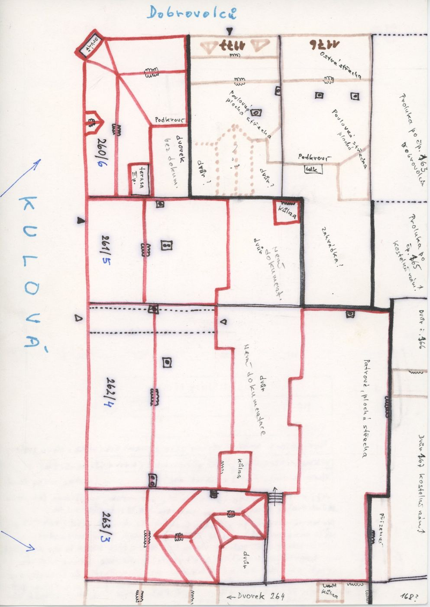
plán / výkres
SHA-256 9f83578eb0c9…

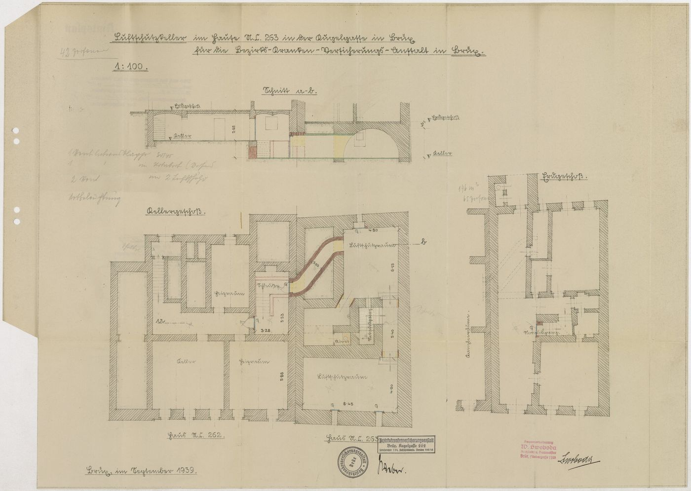
plán / výkres
SHA-256 16e93eccfa6b…

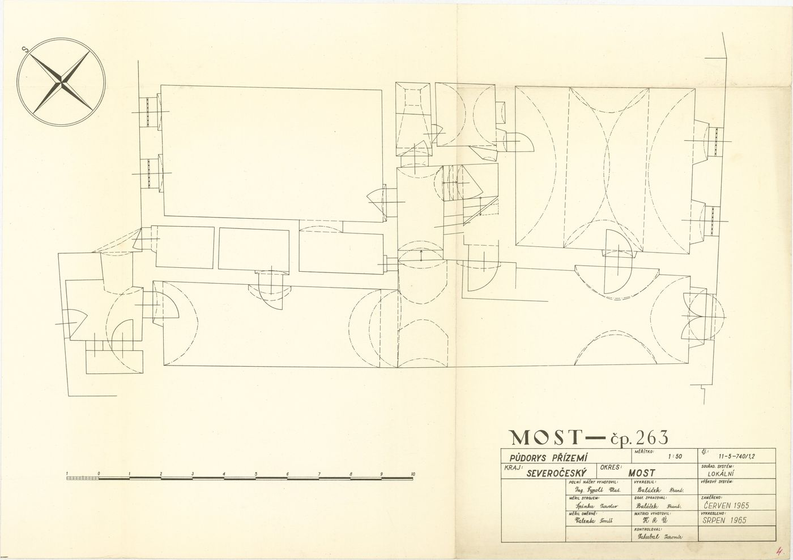
plán / výkres
SHA-256 dcf7bd236b1d…

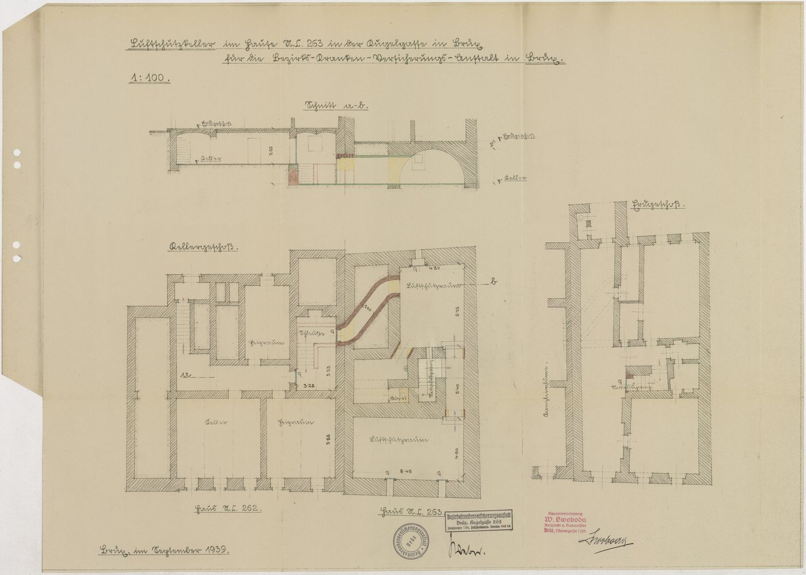
plán / výkres
SHA-256 3006d6461f6e…

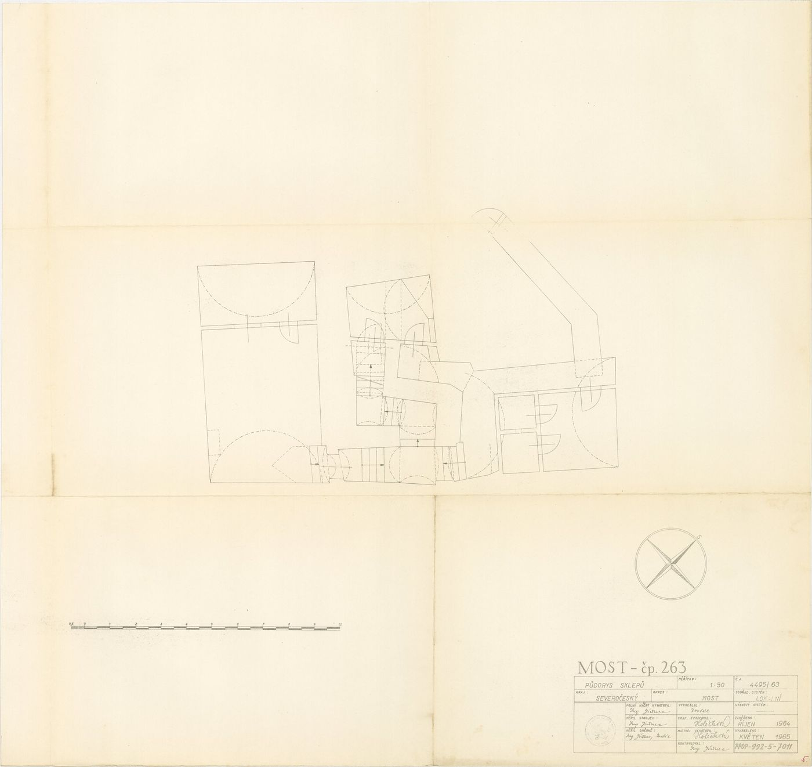
plán / výkres
SHA-256 550e1b03bf80…

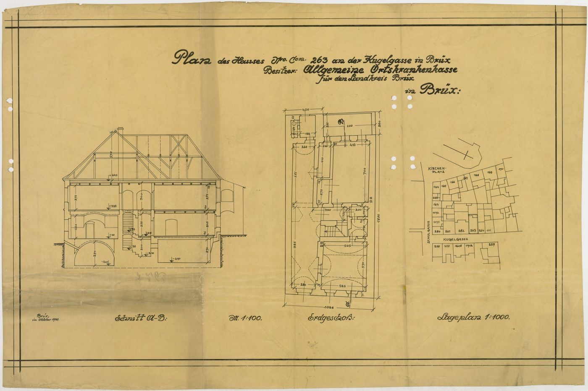
plán / výkres
SHA-256 fa53efe86a09…

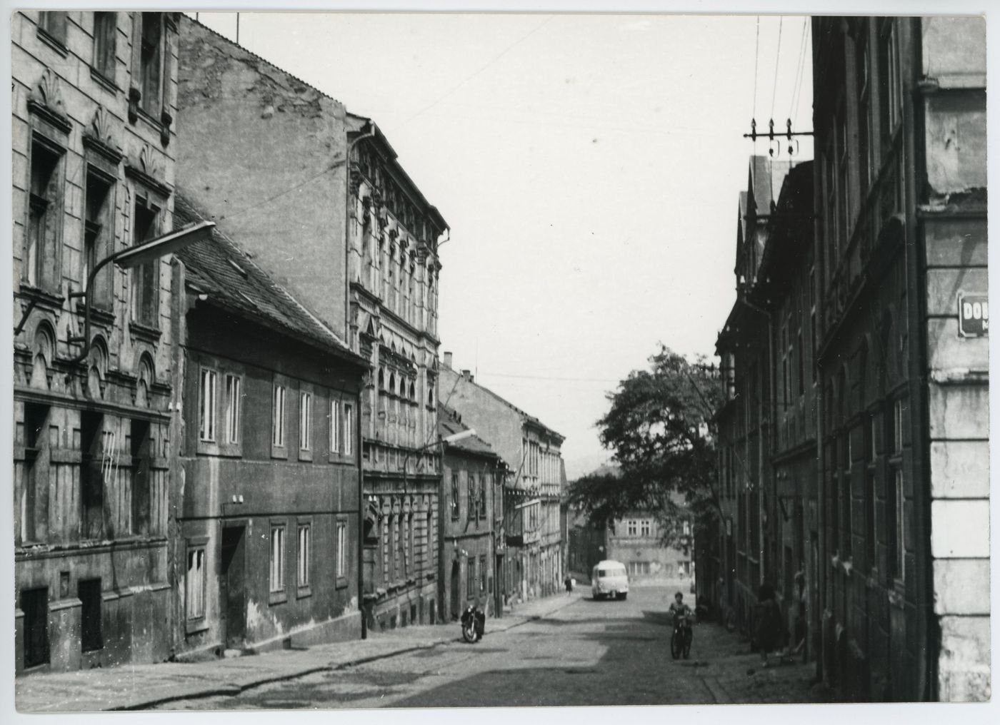
fotografie
SHA-256 8422592be672…

archivní karta
SHA-256 7e1c2e60a8ae…

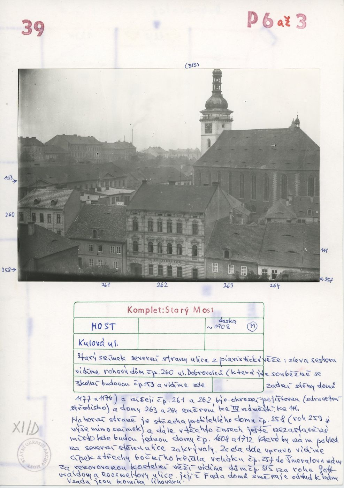
archivní karta
SHA-256 84ed644e75f3…

odvozenina (kolorovaná / FRONT)
SHA-256 fa22e384e1ba…

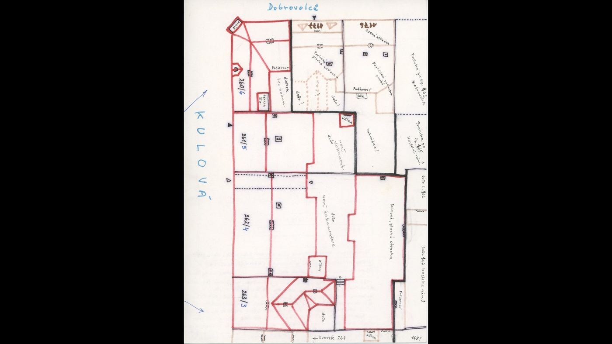
odvozenina (kolorovaná / FRONT)
SHA-256 8e228f324ba9…

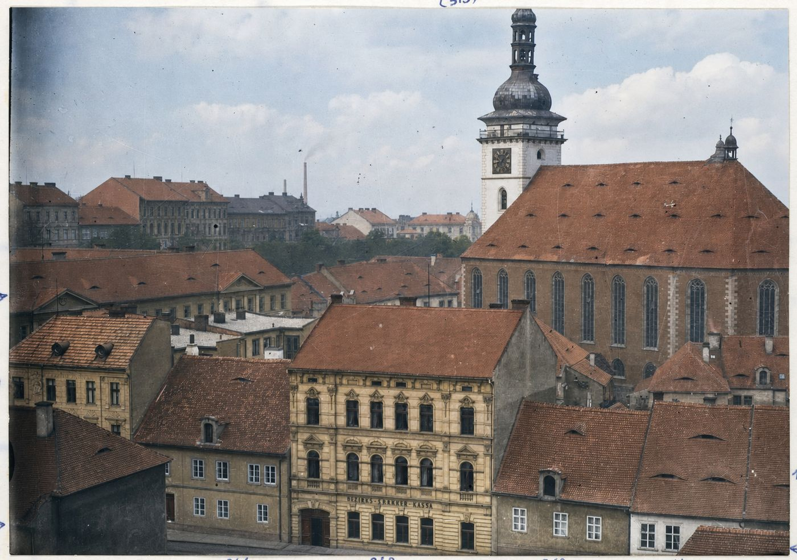
odvozenina (kolorovaná / FRONT)
SHA-256 7be152934800…

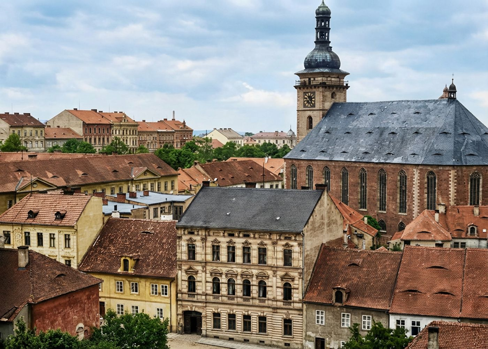
odvozenina (kolorovaná / FRONT)
SHA-256 8751fa795ce6…

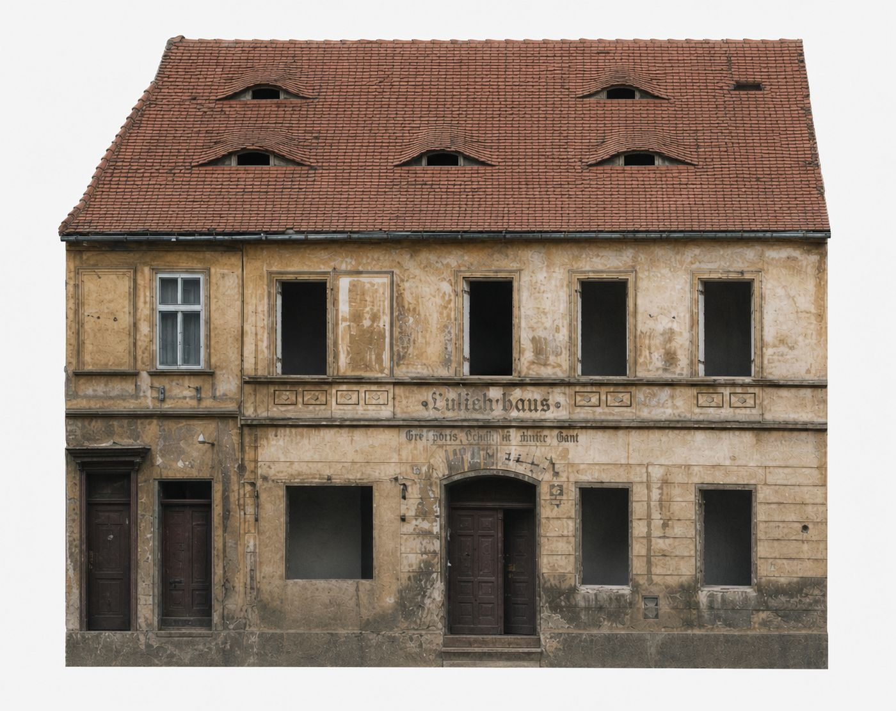
odvozenina (kolorovaná / FRONT)
SHA-256 53fcf394d91c…

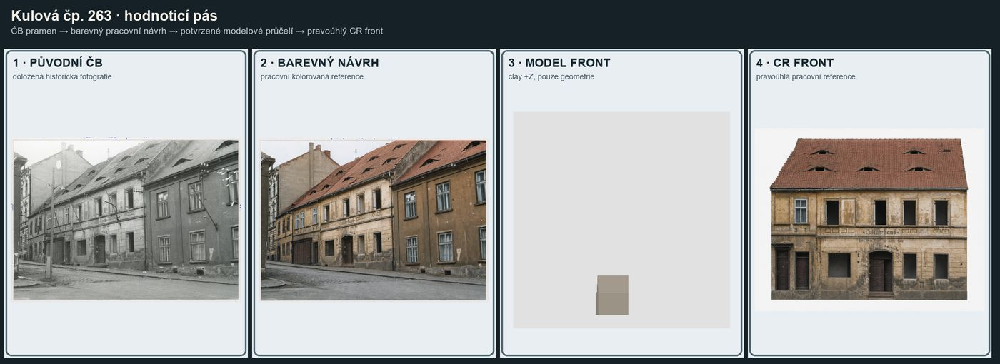
odvozenina (kolorovaná / FRONT)
SHA-256 8b9826d596ed…

odvozenina (kolorovaná / FRONT)
SHA-256 e8f25af82375…
Geometrie
| Revize geometrie | r3 |
|---|---|
| Poloha | GIS půdorys id 9 (ulice Kulová) |
| Šířka průčelí | 10,28 m |
| Výška okapu | 6,30 m (odhad) |
| Podlaží | 2 |
| Střecha podle pramenů | uliční křídlo s hřebenem podél ulice, zadní křídlo s valbou (plán střech bloku) |
| Otvory / vikýře | 6 / 3 |
| Polygonů | 166 |
Kontrolní pohledy
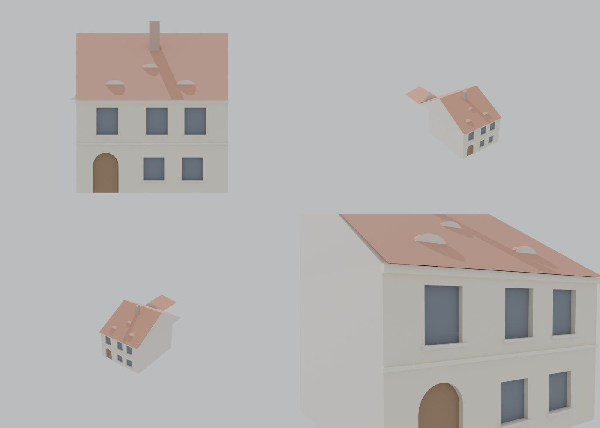
Textury
zatím bez textur
Až Codex dodá texturovaný model, objeví se v prohlížeči nahoře volba Textury (Codex).
Hypotézy
Vše níže je model_hypothesis, provisional, locked: false.
- identity of this facade vs. 264 remains provisional (see identity report 27.9.2026)
- eave/ridge heights and depth are photo/plan estimates
- rear 1908 dormer and rear windows omitted
- eyebrow dormer positions approximate from photo
Soubory
- Geometrie čp. 263, GLB
- Pracovní model: F:\MOST\output\kulova_5houses_claude_G_2026-10-16\houses\cp263\r3\cp_263_G_r3.blend
- Plán modelu: F:\MOST\output\kulova_5houses_claude_G_2026-10-16\houses\cp263\geometry_plan.json